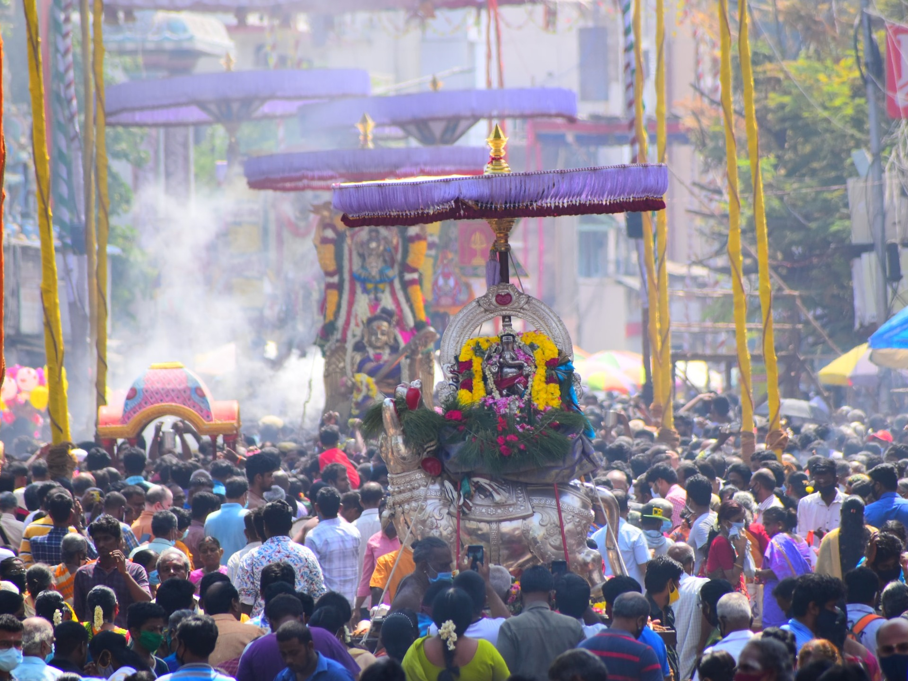
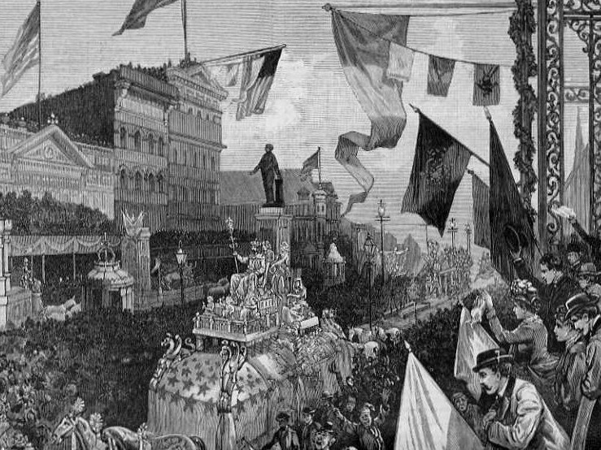
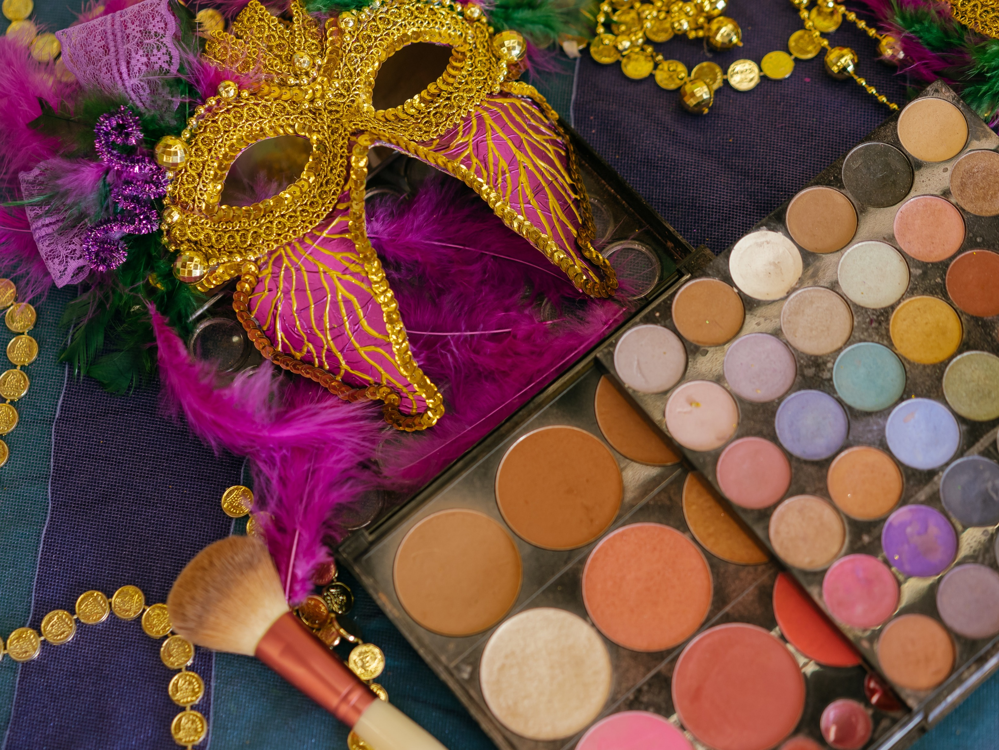

About Us
The holiday
of Mardi Gras is
celebrated in all of Louisiana, including the city of New Orleans. Celebrations are concentrated
for
about two weeks before and through Shrove Tuesday, the day before Ash Wednesday (the start of
lent
in the Western Christian tradition). Usually there is one major parade each day (weather
permitting); many days have several large parades.
The largest and most elaborate parades take place the last five days of the
Mardi Gras season. In the final week, many events occur throughout New Orleans and surrounding
communities,
including parades and balls (some of them masquerade balls). The parades in New Orleans are
organized by
social clubs known as krewes; most follow the same parade schedule and route each year. The
earliest-established krewes were the Mistick Krewe of Comus, the earliest, Rex, the Knights of
Momus
and
the Krewe of Proteus.
Several modern "super krewes" are well known for holding large parades and
events
(often featuring celebrity guests), such as the Krewe of Endymion, the Krewe of Bacchus, as well
as
the
Zulu Social Aid & Pleasure Club—a predominantly African American krewe. Float riders
traditionally
toss
throws into the crowds. The most common throws are strings of colorful plastic beads, doubloons,
decorated plastic "throw cups", Moon Pies, and small inexpensive toys.
Major krewes follow the same
parade schedule and route each year. While many tourists center their Carnival season activities
on
Bourbon Street, major parades originate in the Uptown and Mid-City districts and follow a route
along
St. Charles Avenue and Canal Street, on the upriver side of the French Quarter. Faubourg Marigny
and
French Quarter in the weekends preceding Mardi Gras day. Mardi Gras day traditionally concludes
with
the
"Meeting of the Courts" between Rex and Comus.
History
The first record of Mardi Gras being celebrated in Louisiana was at the mouth of the Mississippi
River in what is now
lower Plaquemines Parish, Louisiana, on March 2, 1699. Iberville, Bienville, and their men
celebrated it as part of an
observance of Catholic practice. The date of the first celebration of the festivities in New
Orleans
is unknown. A 1730
account by Marc-Antoine Caillot celebrating with music and dance, masking and costuming
(including
cross-dressing).
An account from 1743 that the custom of Carnival balls was already established. Processions and
wearing of masks in the
streets on Mardi Gras took place. They were sometimes prohibited by law, and were quickly
renewed
whenever such
restrictions were lifted or enforcement waned.
In 1833, Bernard Xavier de Marigny de Mandeville, a rich plantation owner of French descent
raised
money to fund an
official Mardi Gras celebration. James R. Creecy in his book Scenes in the South, and Other
Miscellaneous Pieces
describes New Orleans Mardi Gras in 1835.
Shrove Tuesday is a day to be remembered by strangers in New Orleans, for that is the day for
fun,
frolic, and comic
masquerading. All of the mischief of the city is alive and wide awake in active operation. Men
and
boys, women and
girls, bond and free, white and black, yellow and brown, exert themselves to invent and appear
in
grotesque, quizzical,
diabolic, horrible, strange masks, and disguises. Human bodies are seen with heads of beasts and
birds, beasts and birds
with human heads; demi-beasts, demi-fishes, snakes' heads and bodies with arms of apes; man-bats
from the moon;
mermaids; satyrs, beggars, monks, and robbers parade and march on foot, on horseback, in wagons,
carts, coaches, cars,
&c., in rich confusion, up and down the streets, wildly shouting, singing, laughing, drumming,
fiddling, fifeing, and
all throwing flour broadcast as they wend their reckless way.
Contemporary Mardi Gras
Epiphany
Epiphany on January 6, has been recognized as the start of the New Orleans Carnival season since at least 1900; locally, it is sometimes known as Twelfth Night although this term properly refers to Epiphany Eve, January 5, the evening of the twelfth day of Christmastide.The Twelfth Night Revelers, New Orleans' second-oldest Krewe, have staged a parade and masked ball on this date since 1870.A number of other groups such as the Phunny Phorty Phellows, La Société Pas Si Secrète Des Champs-Élysées and the Krewe de Jeanne D'Arc have more recently begun to stage events on Epiphany as well. Many of Carnival's oldest societies, such as the Independent Strikers' Society, hold masked balls but no longer parade in public. Mardi Gras season continues through Shrove Tuesday or Fat Tuesday.
Days leading up to Mardi Gras Day
The population of New Orleans more than doubles during the five days before Mardi Gras Day, in anticipation of the biggest celebration. Wednesday night begins with Druids, and is followed by the Mystic Krewe of Nyx, the newest all-female Krewe. Nyx is famous for their highly decorated purses, and has reached Super Krewe status since their founding in 2011. Nyx has plummeted in membership and can no longer hold their self proclaimed status as a super krewe. Thursday night starts off with another all-women's parade featuring the Krewe of Muses. The parade is relatively new, but its membership has tripled since its start in 2001. It is popular for its throws (highly sought-after decorated shoes and other trinkets) and themes poking fun at politicians and celebrities. Friday night is the occasion of the large Krewe of Hermes and satirical Krewe D'État parades, ending with one of the fastest-growing krewes, the Krewe of Morpheus.There are several smaller neighborhood parades like the Krewe of Barkus and the Krewe of OAK. Several daytime parades roll on Saturday (including Krewe of Tucks and Krewe of Isis) and on Sunday (Thoth, Okeanos, and Krewe of Mid-City). The first of the "super krewes," Endymion, parades on Saturday night, with the celebrity-led Bacchus parade on Sunday night.
Mardi Gras Day
The celebrations begin early on Mardi Gras Day, which can fall on any Tuesday between February 3 and March 9 (depending on the date of Easter, and thus of Ash Wednesday). In New Orleans, the Zulu parade rolls first, starting at 8 am on the corner of Jackson and Claiborne and ending at Broad and Orleans, Rex follows Zulu as it turns onto St. Charles following the traditional Uptown route from Napoleon to St. Charles and then to Canal St. Truck parades follow Rex and often have hundreds of floats blowing loud horns, with entire families riding and throwing much more than just the traditional beads and doubloons. Numerous smaller parades and walking clubs also parade around the city. The Jefferson City Buzzards, the Lyons Club, the Irish Channel Corner Club, Pete Fountain's Half Fast Walking Club and the KOE all start early in the day Uptown and make their way to the French Quarter with at least one jazz band. At the other end of the old city, the Society of Saint Anne journeys from the Bywater through Marigny and the French Quarter to meet Rex on Canal Street. The Pair-O-Dice Tumblers rambles from bar to bar in Marigny and the French Quarter from noon to dusk. Various groups of Mardi Gras Indians, divided into uptown and downtown tribes, parade in their finery. For upcoming Mardi Gras Dates through the year 2100 see Mardi Gras Dates.
The Mayor of New Orleans
LaToya Cantrell (née Wilder; born April 3, 1972) is an American politician serving as the Mayor of New Orleans, Louisiana since May 7, 2018. A Democrat, Cantrell is the first woman to hold the office. Before becoming mayor, Cantrell represented District B on the New Orleans City Council from 2012-2018.
Political career
New Orleans City Council In 2012, Cantrell declared her candidacy for the New Orleans City Council seat vacated when former District B representative Stacy Head won an election to an at-large position. After the November election, candidate Dana Kaplan and Cantrell advanced to a December runoff, which Cantrell won with 54 percent of the vote. Cantrell served out the balance of Head's term, and was unopposed for a full four-year term in 2014. As a council member, Cantrell focused on health, housing, and criminal-justice issues. She introduced a bill banning smoking at restaurants and bars within New Orleans, citing the health effects of secondhand smoke on service industry workers. The council unanimously passed the bill in 2015. Also in 2015, Cantrell began work to open a low-barrier homeless shelter, a move that was objected to by residents because of its proposed placement in Central City, New Orleans. Instead, the shelter was moved to the downtown site of the former VA Hospital. In 2017, Cantrell introduced legislation with at-large council member Jason Williams to register and inspect rental units in the city. As a member of the Criminal Justice Committee, Cantrell has participated in efforts to install crime cameras in her district, assess the effectiveness of citywide anti-gun-violence campaigns, and address understaffing at the New Orleans Police Department.
2017 mayoral election
Main article: 2017 New Orleans mayoral election Cantrell declared her candidacy for mayor of New Orleans in March 2017 in a race to replace term-limited mayor Mitch Landrieu. An open primary was held on October 14 and included 18 candidates. Cantrell garnered the most votes, winning 39% of the total. In the November 18 runoff election, Cantrell defeated fellow Democratic opponent Desiree Charbonnet, a former municipal judge, with 60% of the vote. She is the first woman to lead New Orleans in its 300-year history, as well as the first mayor not born in the city since Vic Schiro.
Mayor of New Orleans
Cantrell was inaugurated as mayor on May 7, 2018, the first woman to hold the position in the city's history. Once in office, she established a new Office of Youth and Families, with the goal of creating a strategic plan to address families in crisis in the city. Cantrell also founded a Gun Violence Reduction Council, tasked with finding solutions to violent crime. Starting with a push to rededicate hotel taxes collected within the city for city use, Cantrell has focused on her #fairshare initiative to improve city infrastructure, public transportation, public parks, and green spaces. As part of that initiative, in October 2018 the City of New Orleans filed a lawsuit against four opioid manufacturers and distributors. During the 2019 session of the Louisiana Legislature, Cantrell negotiated the Fair Share Agreement with Governor John Bel Edwards and city, state, and tourism officials. The agreement secured $50 million in upfront funding for the city's infrastructure needs as well as $26 million in annual recurring revenue for the city.Following the approval of the Fair Share Agreement, New Orleans voters approved 3 of the 4 proposals Cantrell and the City Council put on the ballot in the 2019 general election. Voters approved a $500 million bond sale and a tax on short-term rental properties, as well the establishment of a Human Right Commission under the New Orleans Home Rule Charter.
Awards
In 2016, Cantrell was given a lifetime achievement award by the presidents of Tulane, Loyola and Xavier universities and the University of New Orleans for her service to the community. 2021 mayoral election Main article: 2021 New Orleans mayoral election Cantrell was re-elected to office by a wide margin in November 2021, securing 65% of the vote.Her campaign focused on the city's status in 2020 as a COVID-19 hotspot and her efforts, which at times were unpopular, to stop the disease's spread. She also stressed the need for higher-paying jobs for city workers, better public health outcomes and new technologies for the future of New Orleans.